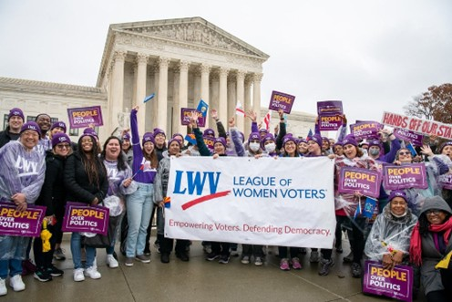

Get Involved
Make a difference in your community. Join us in empowering voters and defending democracy.
Become a Member
Join the League and be part of a community working to protect democracy and empower voters. Your membership supports our voter education programs, candidate forums, and advocacy work.
Individual
$75
Per year, recommended
Household
$150
Per year for two members, recommended
Student
$25
Per year, recommended
These are the recommended dues set by LWV Rhode Island. You can also pay what you can, with a minimum of $20 per person or $40 for a household. Each household member needs their own email address. Membership includes the national League (LWVUS), LWV Rhode Island, and LWV Newport County.
Join the League Today
Visit our membership portal to join LWV Newport County
Join NowYou can also join by clicking "JOIN" at portal.lwv.org/membership
Support Our Work
Your donation helps us register voters, host candidate forums, and advocate for good government in Newport County.
Make a Donation
Support our voter education and advocacy programs
Or mail a check to:
LWV Newport County
PO Box 4204
Middletown, RI 02842
Tax Information: The League of Women Voters of Newport County is organized as a 501(c)(4) nonprofit social welfare organization. Contributions to LWVNC are not tax-deductible as charitable contributions, but they do support our vital work in voter education, registration, and advocacy for good government. For tax-deductible giving, consider a donation to the LWVRI Education Fund, a 501(c)(3) that funds civic-education programming across Rhode Island.
Volunteer Opportunities
Whether you have an hour or ongoing time to share, there's a place for you in the League. Choose the opportunities that fit your schedule and interests.
Voter Registration & Voter Services
Time Commitment: 2-4 hours/month (flexible)
What you'll do:
- Staff voter registration tables at community events
- Help register new voters and provide voter information
- Distribute nonpartisan voter guides and election information
- Assist with candidate forum logistics
- Answer voter questions and direct people to resources
Observer Corps
Time Commitment: 3-5 hours/month
Be part of the Observer Corps by monitoring local government meetings. People elected the current officials, and the work of the government is to reflect the will of the people.
What you'll do:
- Attend government meetings once a month
- Watch for good governance
- You will observe, nothing more
- Report your findings after the meeting is over
Membership and Events
Time Commitment: 2-3 hours/month
Help keep moving the League forward. Whether you have an hour or a special skill to share, there is a place for you on the membership team.
What you'll do:
- Call and welcome new members
- Ensure members understand how to get involved
- Address member questions or concerns
- Help plan, organize, and execute events
- Design invitations and promotional materials for events
Advocacy
Time Commitment: Varies (especially during legislative session)
What you'll do:
- Monitor legislation on League priority issues
- Write letters and emails to legislators
- Attend legislative hearings and testify when appropriate
- Help organize advocacy campaigns
- Participate in coalition work with other organizations
2026 Candidate Forums
August – October 2026 • All Newport County Communities
There will be forums in each of our Newport County cities and towns: Newport, Middletown, Jamestown, Portsmouth, Tiverton, and Little Compton, plus a State Senate primary forum. The full 2026 forum schedule is on our Elections 2026 hub. Each forum needs a team to make it happen — and we need you.
What you'll do:
- Invite candidates and coordinate their participation
- Develop questions for the forum
- Recruit timekeepers and moderators
- Find and secure a venue for your community's forum
Stay Connected
Follow us on social media and subscribe to our newsletter to stay informed about upcoming events, volunteer opportunities, and important election information.